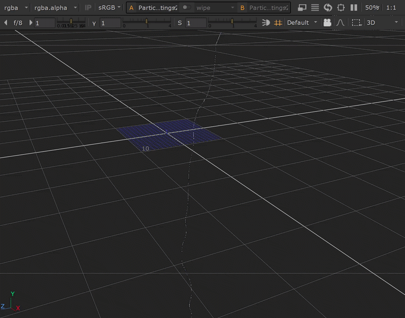
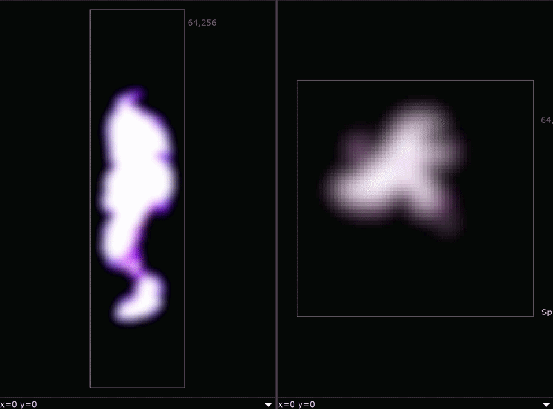
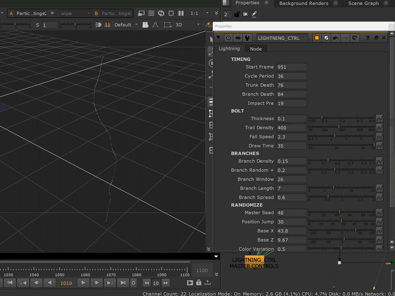
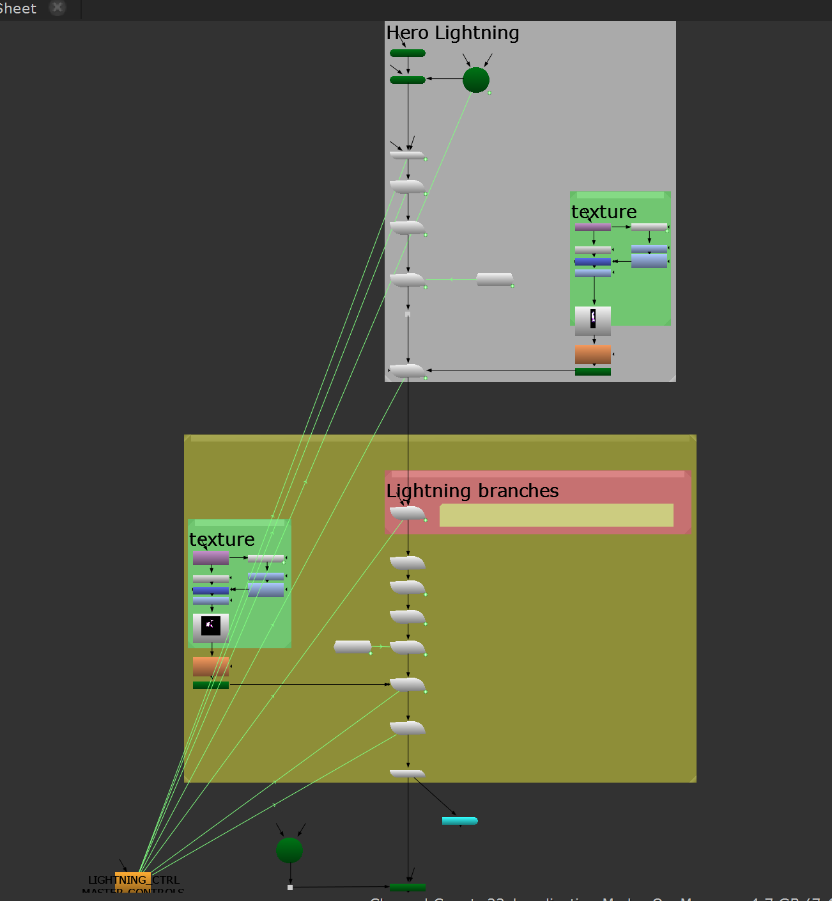

Final Look

Particle Simulation in 3D Viewer
Overview
This project explores a procedural lightning setup built with Nuke particle System. A timed particle emitter creates the hero bolt, while ParticleSpawn generates secondary branches and sparks. Cycle-based randomization controls strike position, colour variation, and branch count, giving each strike a unique pattern.
Technical Breakdown
- Tracer-trail construction: a leader particle draws the bolt path under wind and layered turbulence during a pre-simulation window; ParticleSpawn trails stamp the path into a persistent bolt before the shot starts.
- The remaining-lifetime clock: Nuke's particle expression language has no frame or time variable, so global timing is encoded at spawn instead. Setting
lifetime = deathFrame - frameon the spawn node makes every trail particle die on the same frame, which turnslife - ageinto a synchronized countdown inside the expression. Every event is authored as "N frames before death." - Impact spike: the size expression layers a short decaying spike on top of the base profile, so each bolt lands at roughly 2x thickness on its exact impact frame and then relaxes: the strike's peak, with zero keyframes.
- Self-cycling strikes: modulo-driven emitter rate and trail lifetimes repeat the full appear → flash → fade choreography every N frames.
- Branch architecture: a secondary ParticleSpawn stream grows branch leaders off the hero bolt with their own wind and turbulence; branch trails run on a longer countdown, so they outlive the trunk and dissolve root-to-tip.
- Cycle-stable randomness:
random(floor((frame - start) / period) + seed)stays constant within a cycle and re-rolls between cycles; because spawn-time values are baked into particles at birth, earlier bolts are never retroactively recolored or moved.

Sprite materials (animated turbulence × radial falloff)

Draw Time control: adjusting the hero bolt length from the master panel

Final Node Graph
a NoOp exposing knobs (timing, thickness, branch density, master seed, colour variation)